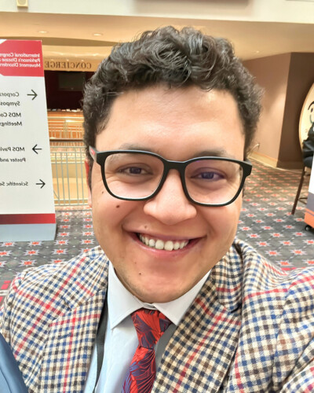

👤Translational Research Scientist · Multimodal Neuroimaging Biomarkers in Neurodegeneration
Postdoctoral Scholar
VCU Parkinson's & Movement Disorders Center
Department of Neurology, Virginia Commonwealth University
Translational research scientist developing multimodal neuroimaging biomarkers of neurodegeneration across the Alzheimer's disease and related dementias (AD/ADRD) and Parkinson's disease spectrum, with the goal of stratifying patients for personalized therapeutic trials and tracking disease progression. My first-author work established Parkinson's disease mild cognitive impairment with MRI evidence of nucleus basalis of Meynert (Ch4) cholinergic degeneration as a novel clinical-imaging subtype, the discovery anchoring my independent research program. I integrate structural, diffusion (free-water), and functional MRI with EEG and large-scale longitudinal datasets (PPMI, ADNI, NACC, PDBP), and have released open-access tools including an imaging-based Ch4 subtyping tool and a deep-learning pipeline for MRI-based Parkinson's detection. Research Fellow at Harvard Medical School (2021–2023), Postdoctoral Scholar in Neurology at Virginia Commonwealth University, and 2025 IMPACT-AD Fellow (National Institute on Aging). Founder of a global research training academy (35,000+ trainees across 20+ countries) and co-founder of the Global NeuroSurg research collaborative.
Multimodal imaging biomarkers to subtype patients for personalized trials and track disease progression across the AD/ADRD and Parkinson's spectrum
My long-term goal is to direct an independent multimodal imaging-biomarker program that develops and validates biomarker signatures of neurodegeneration across the Alzheimer's disease and related dementias (AD/ADRD) and Parkinson's disease spectrum, in order to (1) stratify patients into biologically meaningful subtypes for personalized therapeutic trials and (2) track disease progression. Disease-modifying trials often fail because heterogeneous populations are treated as uniform entities, a bottleneck that multimodal, cross-disease imaging-biomarker characterization can help solve. I integrate structural, diffusion (free-water), and functional MRI with EEG and large-scale longitudinal datasets (PPMI, ADNI, NACC, PDBP).
Flagship program characterizing cholinergic basal-forebrain (nucleus basalis of Meynert, Ch4) degeneration across the AD/ADRD and Parkinson's spectrum. My first-author work established PD mild cognitive impairment with MRI evidence of Ch4 degeneration as a novel clinical-imaging subtype; a companion analysis shows that combining T1 Ch4 gray-matter density with basal-forebrain free-water diffusion outperforms either modality alone. I integrate structural, free-water diffusion, and resting-state functional MRI for an integrated structure–microstructure–function characterization.
Subtyping neurodegenerative disease and tracking progression with large-scale longitudinal datasets (PPMI, ADNI, NACC, PDBP). My work characterized 10-year PD progression across clinical, pathological, and data-driven subtypes and produced disease-duration–specific percentiles for prospective identification of the diffuse-malignant subtype at diagnosis, using mixed-effects and joint longitudinal–survival models.
Developing EEG-based biomarkers of cognitive fluctuations in Lewy body disease, combining resting-state and task-based EEG with NASA's Psychomotor Vigilance Test. The aim is objective, deployable monitoring of fluctuating cognition, and, ultimately, a substrate for adaptive neuromodulation interventions.
My independent research program will build on three converging directions: (1) developing clinically deployable EEG and neuroimaging biomarkers for real-time monitoring of cognitive fluctuations in Lewy body spectrum disorders, with the goal of enabling adaptive neuromodulation interventions; (2) establishing multimodal biomarker panels, combining alpha-synuclein seed amplification, plasma NfL/p-tau, and MRI-based vascular and cholinergic markers, for pathology-driven patient stratification to enrich clinical trials of disease-modifying therapies; and (3) leveraging large-scale longitudinal datasets (PPMI, ADNI, NACC, PDBP) with machine learning to build prognostic models that identify high-risk subtypes at diagnosis, enabling earlier intervention. These efforts are designed to bridge the gap between biomarker discovery and clinical trial design, with a focus on translating precision medicine frameworks into actionable tools for neurologists and trial sponsors.
150+ peer-reviewed publications · 8,500+ citations · 44 H-index · 102 i10-index
Negida A, et al. Chapter 14: Epidemiology and risk factors of Parkinson's disease. In: Essential Guide to Neurodegenerative Disorders. Academic Press, 2025; pp 225–234.
Executed agreements and approved study roles held in my own name.
Role: Chair, Writing Group, in collaboration with Ai-Ling Lin, PhD (University of Missouri)
Scope: Approved access to U.S. POINTER trial imaging data. No funding is attached to this approval.
A4 (Anti-Amyloid Treatment in Asymptomatic Alzheimer's Disease); ADNI (2, 3, 4, 5); ADNI-DoD (Department of Defense / Veterans cohort); AIBL (Australian Imaging, Biomarker and Lifestyle Flagship Study of Ageing); AMP-PD (Accelerating Medicines Partnership, Parkinson's Disease; Tier 1 approved, Tier 2 in processing); CPP (Critical Path for Parkinson's, Critical Path Institute); NACC (National Alzheimer's Coordinating Center); OASIS-3 (Open Access Series of Imaging Studies); PDBP (Parkinson's Disease Biomarkers Program); PPMI (Parkinson's Progression Markers Initiative).
Contributing role as a postdoctoral scholar.
Role: Postdoctoral Researcher
Contribution: Generated pilot data, contributed to study design, biostatistical planning, EEG/neuroimaging analysis sections, and grant document preparation.
Role: Postdoctoral Researcher
Contribution: EEG/neuroimaging analysis and manuscript preparation.
Academic appointments and education across four countries
Institute on Methods and Protocols for Advancement of Clinical Trials in ADRD. Advanced training in Alzheimer's and related dementias clinical trial design and methodology.
Dissertation: "The Hope and the Hype in Parkinson's Disease Treatments", Meta-research, evidence synthesis, and critical appraisal of neuroprotective interventions.
Open-source tools developed for clinical neuroscience and evidence synthesis research
Imaging-based subtype tool for PD-MCI using cholinergic nucleus 4 (NBM) gray matter density. Helps identify patients with cholinergic vulnerability markers for treatment selection.
Interactive tool for clinical, pathological, and data-driven subtyping of Parkinson's Disease. Applies disease-duration–specific percentile thresholds (PPMI, N=1,030) to classify patients into diffuse-malignant, intermediate, and mild-motor-predominant subtypes for real-time trial stratification.
Online calculator for predicting striatal volumes in Huntington's Disease patients using demographic and clinical variables, enabling pre-screening for clinical trials of intrastriatal gene therapies.
Comprehensive statistical conversion tool for systematic reviews with 21 conversion functions including median/IQR to mean/SD, SEM to SD, and CI to SD for one and two groups.
Full-featured platform for meta-analyses with statistical analysis and visualization. Supports standard meta-analysis, DTA, meta-regression, subgroup analysis, and publication bias assessment.
Convolutional neural network for automated Parkinson's Disease detection from structural 3D T1-weighted MRI. End-to-end pipeline from preprocessing to classification with interpretability visualization.
DTI-ALPS pipeline for quantifying perivascular (glymphatic) diffusivity, using ANTs SyN nonlinear registration in place of the FSL-FLIRT tensor registration of the standard alps.sh toolbox, with T1-mediated boundary-based registration for improved anatomical alignment.
MATLAB toolbox for dominant frequency-based EEG feature extraction. Designed for EEG research in Alzheimer's disease, Lewy body dementia, and Parkinson's disease; automated spectral analysis and biomarker extraction.
Comprehensive pipelines for structural, functional, and diffusion MRI analysis including VBM, cortical thickness, DTI-ALPS for glymphatic function, and multimodal integration.
Contributing to global research education and training since 2014
Founded in 2014, Negida Research Academy is a global virtual training platform delivering comprehensive research education. The Academy conducts two structured cohort-based training camps annually, each training approximately 1,200 researchers over 8–12 weeks. Created a sustainable training model now replicated in multiple LMIC institutions.
35,000+ total trainees · 20+ countries · 2,500+ active members · 50+ mentees published
Comprehensive curricula covering research design, biostatistics, data analysis, systematic reviews, meta-analysis, scientific writing, and grant preparation. Mentees have gone on to research and faculty appointments, including a postdoctoral scholarship in neurological surgery at Oregon Health & Science University and a research scientist post at the University of Arizona with an assistant research professorship at Mayo Clinic Arizona.
Developed the first neuroimaging analysis course in Arabic for the Middle East region, teaching MRI preprocessing, VBM, and fMRI analysis using MATLAB/SPM12/CAT12.
Supervised graduate and undergraduate students in neuroimaging analysis, machine learning, and systematic reviews. 50+ junior researchers mentored to first-author publications in peer-reviewed journals.
Named mentees: Hazem Ghaith, MD (Postdoctoral Scholar, Department of Neurological Surgery, Oregon Health & Science University) and Hussien Abdelgawad, MD (Research Scientist, University of Arizona; Assistant Research Professor, Mayo Clinic Arizona). Further mentees have first-authored peer-reviewed papers across academic medical centers in Europe and the Middle East.
Member, Education Committee, Research Committee, and Guidelines Development Committee at the North American Neuromodulation Society (2023–Present).
Youngest Egyptian doctor to complete a PhD from the UK (age 27), Recognized by Elwatan News, 2022.
Highest scientific research productivity medical student in Egyptian university history, Recognized by Zagazig University, 2018.
Media coverage: Neurology Today (USA, 2024), Elhayah TV (2022), Al-Ahram Newspaper (2020), Egyptian National TV Channel 1 (2020), Elwattan News, Shorouk News, Baladna Elyoum News.
Additional presentations at MDS, AAN, WFNS, WSO, EANS, and other international conferences (2014–2025).
Member, North American Neuromodulation Society Guidelines Committee
Member, European Association of Neurosurgical Societies Guidelines Committee
Led development of CHYSPR guidelines for spina bifida and hydrocephalus in LMICs
Managing Editor: Journal of Global Neurosurgery
Editorial Board: Frontiers in Neurology (Dementia, Neurodegenerative Diseases, Neurotrauma, Experimental Therapeutics); PLOS ONE; Current Neuropharmacology; Frontiers in Surgery; Frontiers in Emergency Medicine; Frontiers in Pain Research; Frontiers in Pediatrics; Medicine; Pain Research and Management
Ad-hoc Reviewer: Nature Scientific Reports, BMJ JNNP, BMC Neurology, BMC Public Health, Frontiers in Medicine/Neuroscience/Pharmacology, World Neurosurgery, and more (150+ verified reviews on Web of Science)
International Parkinson's & Movement Disorder Society · American Academy of Neurology · International Neuromodulation Society · North American Neuromodulation Society · Sigma Xi Scientific Honor Society · European Association of Neurosurgical Societies · WFNS Global Neurosurgery Committee (Secretariat)
My commitment to diversity and equity in science is demonstrated through sustained action across multiple dimensions. As founder of a research training academy serving 35,000+ trainees across 20+ countries, predominantly in low- and middle-income countries (LMICs), I have worked to dismantle barriers to research participation for underrepresented communities in the Middle East, Africa, and South Asia. I developed the first neuroimaging analysis course in Arabic, addressing a critical language gap that excluded thousands of researchers from advanced training opportunities.
As co-founder of the Global NeuroSurg collaborative (2,000+ investigators, 50+ countries), I have championed inclusive research models that ensure investigators from LMICs are not merely data collectors but equal scientific partners with authorship and leadership roles. My work on CHYSPR guidelines directly addresses pediatric neurosurgical disparities in resource-limited settings.
At VCU, I contribute to mentoring trainees from diverse backgrounds and actively work to ensure equitable representation in collaborative research teams. My research on treatment disparities in dementia care (prescribing patterns of cholinesterase inhibitors across racial and socioeconomic groups) reflects a scientific commitment to health equity.
Evidence synthesis, clinical trial methodology, and medical writing for major pharmaceutical sponsors
Sponsors: Pfizer, AbbVie, Bayer, Roche, AstraZeneca, Mundipharma, Vifor Pharma, Johnson & Johnson, Servier, Biogen
Parkinson's and Movement Disorders Center
Department of Neurology
Virginia Commonwealth University
Richmond, VA, USA
English (Fluent) · Arabic (Native) · French (Intermediate)
Through DataCliNiX, my own consultancy, I offer research consultation services including study design, statistical analysis, neuroimaging analysis, systematic reviews, meta-analysis, medical writing, and clinical research training.
All outside activities, including this consultancy, Negida Research Academy as an educational training entity, and the research platforms listed above, are disclosed and managed under institutional conflict-of-interest and outside-activity policies.
Available upon request. References include current and former mentors, collaborators, and department chairs from VCU, Harvard Medical School, and international collaborating institutions.